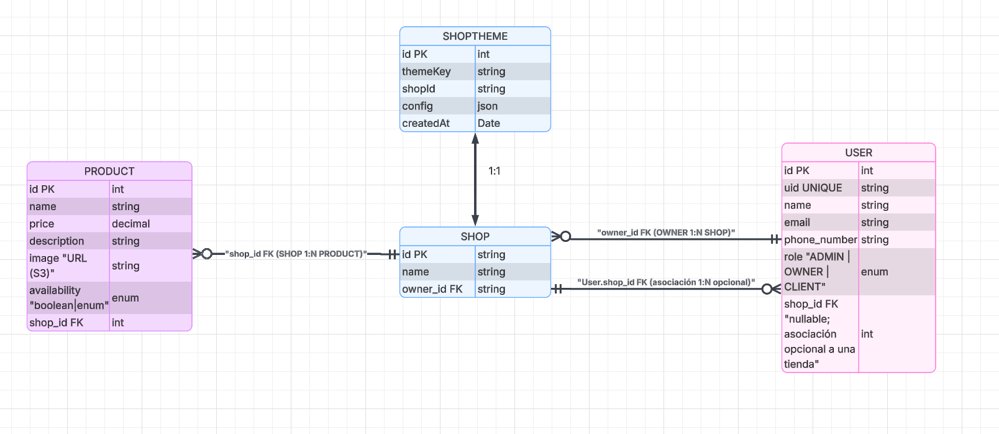

Shop service
- GET /health
- GET /shops?page=1&limit=10
- GET /shops/:id
- POST /shops (JWT requerido)
- PUT /shops/:id
- DELETE /shops/:id
- POST /shops/:id/memberships (JWT requerido)
OpenStore Docs
Esta pagina describe como comunicarte con los microservicios, que rutas usar y como entender el modelo relacional del sistema.
OpenStore usa una arquitectura de microservicios donde cada dominio del negocio se implementa de forma independiente:
Los puertos varian por entorno. A continuacion se resumen los valores definidos en Docker Compose y CloudFormation.
| Servicio | Stack | Puerto host | Puerto interno | Base path |
|---|---|---|---|---|
| user-service | Spring Boot | 3050 | 8080 | /api |
| shop-service | Express + Prisma | 3060 | 3000 | / |
| product-service | FastAPI | 3070 | 8000 | / |
| store-service | FastAPI | 2060 | 8000 | / |
| postgres | PostgreSQL | ${POSTGRES_PORT:-4050} | 5432 | N/A |
| mysql | MySQL | ${MYSQL_PORT:-4060} | 3306 | N/A |
| mongo | MongoDB | ${MONGO_PORT:-4070} | 27017 | N/A |
Nota local: si un puerto ya esta en uso (ejemplo 4060), el script SETUP_BD.sh asigna automaticamente el siguiente puerto libre y lo refleja en backend/.env y backend/.env.api.generated.
| Componente AWS | Puerto | Detalle |
|---|---|---|
| ALB listener | 80 | Entrada publica HTTP y enrutamiento por path |
| App servers (EC2) | 3050, 3060, 3070, 2060 | Reciben trafico desde el SG del ALB |
| DB server (EC2) | 4050, 4060, 4070 | Puertos de BD abiertos por Security Group |
El template cloud-formation.yml aprovisiona ALB, EC2 para apps, EC2 para bases de datos, bucket S3 y el despliegue del frontend en Amplify tomando la carpeta frontend del mismo repositorio.
aws ec2 describe-vpcs \
--query "Vpcs[].{VpcId:VpcId,Cidr:CidrBlock,Name:Tags[?Key=='Name']|[0].Value}" \
--output table
aws ec2 describe-subnets \
--filters "Name=vpc-id,Values=vpc-xxxxxx" \
--query "Subnets[].{SubnetId:SubnetId,AZ:AvailabilityZone,PublicIpMap:MapPublicIpOnLaunch,Name:Tags[?Key=='Name']|[0].Value}" \
--output table
aws ec2 describe-key-pairs --query "KeyPairs[].KeyName" --output tableAmplify necesita conectarse al repositorio de GitHub para clonar el código y crear webhooks de auto-despliegue. Para ello, requiere un token personal de GitHub (PAT) con permisos específicos.
Guarda este token en un archivo .env en la raíz del proyecto:
FRONTEND_AMPLIFY_ACCESS_TOKEN=ghp_tu_token_aquiNO commits este archivo a Git. Agrega .env a .gitignore si aún no está.
Ejemplo (repositorio publico, sin token de GitHub):
aws cloudformation deploy \
--stack-name openstore-stack \
--template-file cloud-formation.yml \
--capabilities CAPABILITY_NAMED_IAM \
--parameter-overrides \
InstanceName=MV-OpenShop \
AMI=ami-08d434e92c0cfa0c0 \
KeyName=vockey \
InstanceType=t3.micro \
VpcId=vpc-xxxxxxxx \
PublicSubnet1=subnet-xxxxxxxx \
PublicSubnet2=subnet-yyyyyyyy \
FrontendRepoUrl=https://github.com/Lazheart/OpenStore \
FrontendBranchName=main \
FrontendAmplifyAppName=openstore-frontendSi Amplify requiere autenticacion GitHub, agrega: FrontendAmplifyAccessToken=ghp_tu_token.
aws cloudformation describe-stacks \
--stack-name openstore-stack \
--query "Stacks[0].Outputs[].[OutputKey,OutputValue]" \
--output tableOutputs esperados: DNS del ALB, URL de Amplify y datos de las instancias.
El flujo definido en UserData es: primero bases de datos (PostgreSQL, MySQL, MongoDB), luego servicios (user-service, shop-service, product-service) una vez que los puertos de DB estan disponibles.
Para endpoints protegidos usa JWT en cabecera Authorization.
Authorization: Bearer <token_jwt>Shop service expone Swagger UI en: http://localhost:3001/api-docs
curl -X GET "http://localhost:3001/shops?page=1&limit=10"
curl -X POST "http://localhost:8000/shops/{shop_id}/products" \
-H "Content-Type: application/json" \
-d '{
"name": "Teclado mecanico",
"price": 59.99,
"description": "Switches red",
"imageUrl": "https://example.com/keyboard.png"
}'Referencia visual del modelo entidad-relacion usado para usuarios, tiendas y productos.

Entidad base: User
Campos:
Roles del sistema:
Los roles pueden modelarse con herencia o mediante el atributo role.
Restricciones:
Entidad: Shop
Atributos:
Relaciones:
Entidad: Product
Atributos:
Restricciones:
Relacion principal: Shop (1) -> (N) Product.